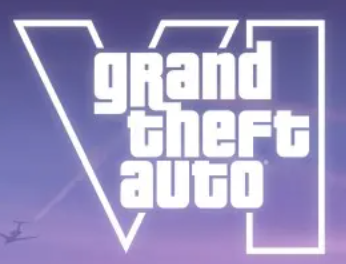
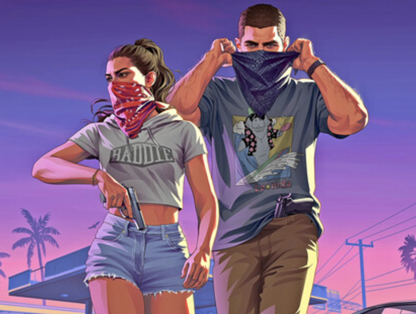
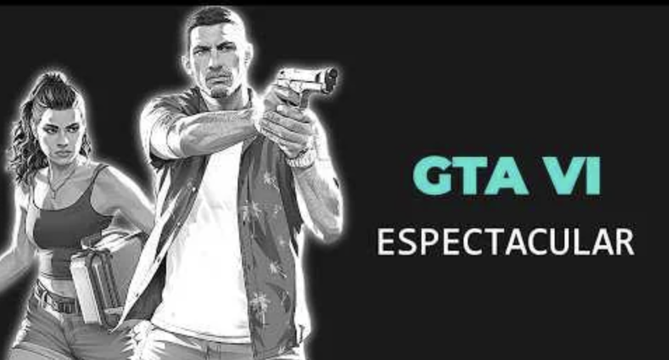
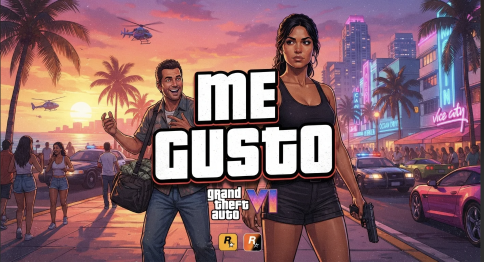
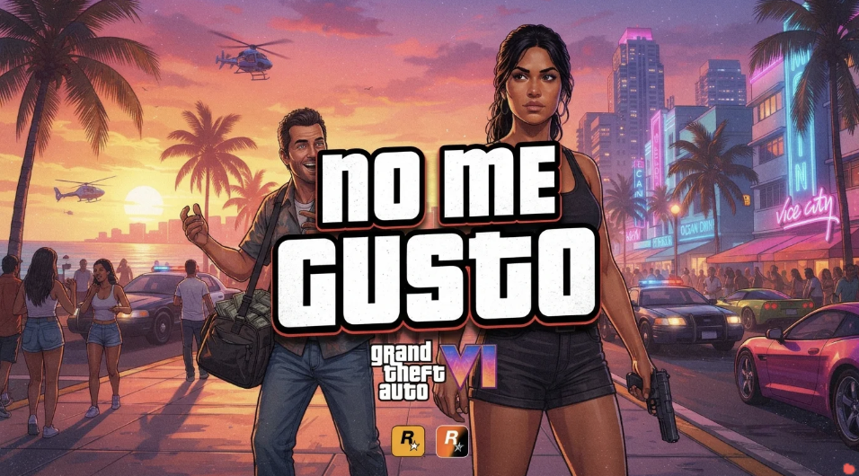

Bueno el juego de GTA IV es un juego de mundo abierto donde la historia gira alrededor de dos protagonistas, Jason Duval y Lucía Caminos, quienes buscan cambiar sus vidas, pero terminan involucrados en una peligrosa conspiración criminal.

Lastimosamente yo aun no he podido jugar demaciado como para dar mi opinion del juego pero cree este resumen de varias opiniones que pude ver por la red de varias persona que ya tienen sus horas y consdero que ahora si estas estas opiciones son las validas.
Las primeras impresiones generales de **GTA 6** son bastante prometedoras, ya que el juego presenta un mundo abierto lleno de detalles, escenarios muy variados y una ambientación que transmite mucha vida. La historia de Jason y Lucía parece ofrecer una experiencia más personal, combinando acción, crimen y relaciones entre personajes. Además, sus gráficos y animaciones muestran un gran avance respecto a entregas anteriores, creando muchas expectativas sobre lo que podremos explorar y experimentar. En general, GTA 6 promete ser una de las experiencias más ambiciosas de Rockstar Games.

Considero que aun no tengo las horas necesarias para poder decir que me gusto pero esta parte va de eso asi que ni pex, bueno este juego me atrapo desde el principio por que tiene un motor grafico muy bueno, los personajes se sienten mas pesados y no todo es tan facil como solia ser en el GTA pasado.
Tambien el echo de que las persecuciones con los policias ahora con mas complejas ya que si te metes a robar a algun lado hay gente que te puede ver y eso hace que los polis puedas identificarte, entonces antes de hacer algo no muy legal se puede poner cosas en la cara para poder evitar que te reconoscan.
Tambien el echo de la ropa ahora tiene mas importancia ya que como pasa con la cara tambien los NPC son capaces de identofocar la ropa que llevas entonces debes tener cambios para poder cambiar tu aparioencia para que no te encuentren.
Tambien en las persecucuines dependen mucho de que te vean si no te ven te puedes escapar de ellos. Las estaciones de musica aqui son las mejores y sin habalar de esa cancion que paso en una parte de la historia donde la verdad no queria terminar esa parte para seguir escuchando la cancion.

Considero que aun no tengo las horas necesarias para poder decir que me no gusto pero esta parte va de eso asi que ni pex, creo que hasta ahora lo unico que no me gusto fue lucia ya que como sabemos el bieno a molestar jajaja.
Ya hablando encerio creo que el juego es algo lento y esto se puede ver por que si no avansas en la historia no puedes hacer mucho y lueog el tema de dinero por lo que he visto es algo que importa al principio pero ya despues el problema es que aun no hay muchas cosas que puedas comprar pero creo que por ahora lo unico que puedes hacer es ahorrar para cuando la aya.

Bueno en esta parte dejo los costos aproximados en 10 paises
| País | Costo en MXN |
|---|---|
| Mexico | $1300 |
| Estados Unidos | $1460 |
| Canada | $1490 |
| Reino Unido | $1690 |
| España | $1620 |
| Alemania | $1620 |
| Japón | $1210 |
| Brasil | $1570 |
| Austalia | $1550 |
| India | $1200 |